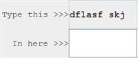
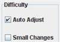
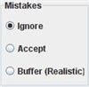
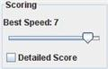
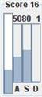
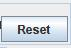
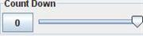

|  |
Enter the keystrokes from the top in the text field below |
|
Adjust the difficulty to suit your ability. A more difficult setting will include more difficult keystrokes |
|
|  |
Choose whether Difficulty will be automatically adjusted based on your 'Accuracy' and 'Speed' scores Choose whether automatic difficulty will change in smaller increments. |
|  |
Select how mistakes will be treated: |
|  |
Select the speed (in keys per second) that will indicate perfect speed. Its best to set this lower when adjusting to a new keyboard. Increase it to practice for high speed typing. Choose whether to display detailed score information |
|  |
Observe your score which is constantly being updated: |
|  |
Resets the score and generates a fresh set of keystrokes to be entered |
|  |
Use the 'Count Down' feature to limit the number of keystrokes to be entered. Start by clicking the button on the left. When the the count reaches zero, the cursor will disappear from the input text field, temporarily preventing any further input |
The Typing Game (TTT) is designed to not really have a start and a finish. Just use it for as long as you wish. Take a break and come back.
TTT will start out easy and get more difficult as you get more confident. (Assuming the option to automatically adjust difficulty is selected)